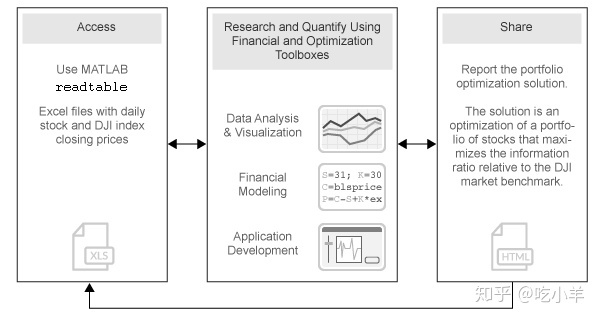
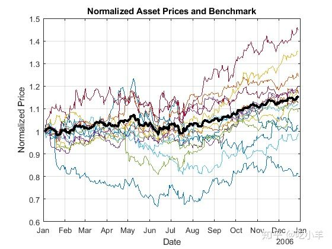
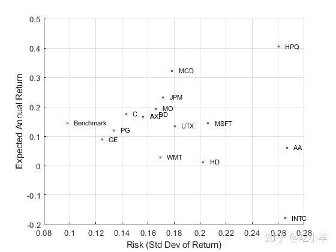
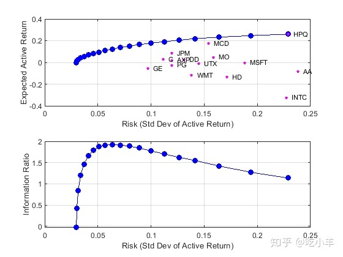
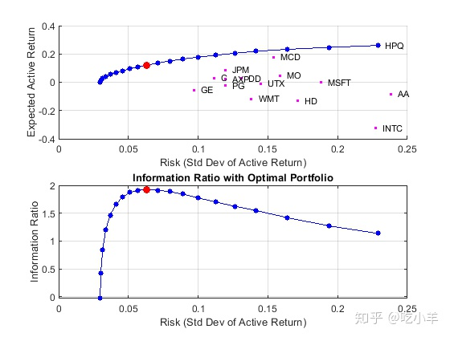

Home
本示例说明如何使用金融工具箱中的Portfolio对象执行投资组合优化。
尤其是，该示例说明了如何优化投资组合以相对于市场基准最大化信息比率。具体而言，将table中包含的财务数据读入MATLAB并进行可视化（按天和按年）。Portfolio对象是使用每个资产的交易日收益的市场数据来创建的。使用支持Portfolio对象的函数，可以直接计算有效边界。然后，解决定制的优化问题，以找到信息比率最大的资产分配。

使用MATLAB导入历史数据
导入资产范围和道琼斯工业平均指数（DJI）市场基准的历史价格。使用MATLAB的readtable函数，将数据从Microsoft?Excel电子表格导入到table。
data = readtable('dowPortfolio.xlsx');
head(data, 10)
ans=10×32 table
Dates DJI AA AIG AXP BA C CAT DD DIS GE GM HD HON HPQ IBM INTC JNJ JPM KO MCD MMM MO MRK MSFT PFE PG T UTX VZ WMT XOM
___________ _____ _____ _____ _____ _____ _____ _____ _____ _____ _____ _____ _____ _____ _____ _____ _____ _____ _____ _____ _____ _____ _____ _____ _____ _____ _____ _____ _____ _____ _____ _____
?
03-Jan-2006 10847 28.72 68.41 51.53 68.63 45.26 55.86 40.68 24.18 33.6 17.82 39.79 36.14 28.35 80.13 24.57 59.08 37.78 38.98 32.72 75.93 52.27 30.73 26.19 22.16 56.38 22.7 54.94 26.79 44.9 56.64
04-Jan-2006 10880 28.89 68.51 51.03 69.34 44.42 57.29 40.46 23.77 33.56 18.3 39.05 35.99 29.18 80.03 24.9 59.99 37.56 38.91 33.01 75.54 52.65 31.08 26.32 22.88 56.48 22.87 54.61 27.58 44.99 56.74
05-Jan-2006 10882 29.12 68.6 51.57 68.53 44.65 57.29 40.38 24.19 33.47 19.34 38.67 35.97 28.97 80.56 25.25 59.74 37.67 39.1 33.05 74.85 52.52 31.13 26.34 22.9 56.3 22.92 54.41 27.9 44.38 56.45
06-Jan-2006 10959 29.02 68.89 51.75 67.57 44.65 58.43 40.55 24.52 33.7 19.61 38.96 36.53 29.8 82.96 25.28 60.01 37.94 39.47 33.25 75.47 52.95 31.08 26.26 23.16 56.24 23.21 54.58 28.01 44.56 57.57
09-Jan-2006 11012 29.37 68.57 53.04 67.01 44.43 59.49 40.32 24.78 33.61 21.12 39.38 36.23 30.17 81.76 25.44 60.38 38.55 39.66 33.88 75.84 53.11 31.58 26.21 23.16 56.67 23.3 55.2 28.12 44.4 57.54
10-Jan-2006 11012 28.44 69.18 52.88 67.33 44.57 59.25 40.2 25.09 33.43 20.79 40.33 36.17 30.33 82.1 25.1 60.49 38.61 39.7 33.91 75.37 53.04 31.27 26.35 22.77 56.45 23.16 55.24 28.24 44.54 57.99
11-Jan-2006 11043 28.05 69.6 52.59 68.3 44.98 59.28 38.87 25.33 33.66 20.61 41.44 36.19 30.88 82.19 25.12 59.91 38.58 39.72 34.5 75.22 53.31 31.39 26.63 23.06 56.65 23.34 54.41 28.58 45.23 58.38
12-Jan-2006 10962 27.68 69.04 52.6 67.9 45.02 60.13 38.02 25.41 33.25 19.76 41.05 35.77 30.57 81.61 24.96 59.63 37.87 39.5 33.96 74.57 53.23 31.41 26.48 22.9 56.02 23.24 53.9 28.69 44.43 57.77
13-Jan-2006 10960 27.81 68.84 52.5 67.7 44.92 60.24 37.86 25.47 33.35 19.2 40.43 35.85 31.43 81.22 24.78 59.26 37.84 39.37 33.65 74.38 53.29 31.4 26.53 22.99 56.49 23.27 54.1 28.75 44.1 59.06
17-Jan-2006 10896 27.97 67.84 52.03 66.93 44.47 60.85 37.75 25.15 33.2 18.68 40.11 35.56 31.2 81.05 24.52 58.74 37.64 39.11 33.77 73.99 52.85 31.16 26.34 22.63 56.25 23.13 54.41 28.12 43.66 59.61从表格中分离资产名称，资产价格和DJI基准价格。可视化图片显示：归一化为统一的所有资产价格（即累积收益）的演变。
benchPrice = data.DJI;
assetNames = data.Properties.VariableNames(3:2:end); % using half of the assets for display
assetPrice = data(:,assetNames).Variables;
?
assetP = assetPrice./assetPrice(1, :);
benchmarkP = benchPrice / benchPrice(1);
?
figure;
plot(data.Dates,assetP);
hold on;
plot(data.Dates,benchmarkP,'LineWidth',3,'Color','k');
hold off;
xlabel('Date');
ylabel('Normalized Price');
title('Normalized Asset Prices and Benchmark');
grid on;
粗线表示道琼斯工业平均指数市场基准。
计算收益和风险调整收益
根据价格序列计算收益序列，并计算资产动量（历史收益和标准差）。可视化图片显示：所有资产的风险收益特征和DJI市场基准的散点图。
benchReturn = tick2ret(benchPrice);
assetReturn = tick2ret(assetPrice);
?
benchRetn = mean(benchReturn);
benchRisk = std(benchReturn);
assetRetn = mean(assetReturn);
assetRisk = std(assetReturn);计算历史统计数据并绘制年度风险收益图。请注意，该图为年度水平，因此按日收益率进行换算。
scale = 252;
?
assetRiskR = sqrt(scale) * assetRisk;
benchRiskR = sqrt(scale) * benchRisk;
assetReturnR = scale * assetRetn;
benchReturnR = scale * benchRetn;
?
figure;
scatter(assetRiskR, assetReturnR, 6, 'm', 'Filled');
hold on
scatter(benchRiskR, benchReturnR, 6, 'g', 'Filled');
for k = 1:length(assetNames)
text(assetRiskR(k) + 0.005, assetReturnR(k), assetNames{k}, 'FontSize', 8);
end
text(benchRiskR + 0.005, benchReturnR, 'Benchmark', 'Fontsize', 8);
hold off;
?
xlabel('Risk (Std Dev of Return)');
ylabel('Expected Annual Return');
grid on;
建立投资组合优化
通过使用Portfolio填充对象来设置投资组合优化问题。因为目标是根据基准优化投资组合分配，所以将在Portfolio对象中计算和使用每种资产的有效收益。在此示例中，投资组合中资产的预期收益和协方差设置为其历史值。
p = Portfolio('AssetList',assetNames);设置默认投资组合约束（所有权重之和为1，不做空，对风险资产的投资为100％）。
p = setDefaultConstraints(p);将资产收益和协方差添加到Portfolio对象。
activReturn = assetReturn - benchReturn;
pAct = estimateAssetMoments(p,activReturn,'missingdata',false)
pAct =
Portfolio with properties:
?
BuyCost: []
SellCost: []
RiskFreeRate: []
AssetMean: [15x1 double]
AssetCovar: [15x15 double]
TrackingError: []
TrackingPort: []
Turnover: []
BuyTurnover: []
SellTurnover: []
Name: []
NumAssets: 15
AssetList: {1x15 cell}
InitPort: []
AInequality: []
bInequality: []
AEquality: []
bEquality: []
LowerBound: [15x1 double]
UpperBound: []
LowerBudget: 1
UpperBudget: 1
GroupMatrix: []
LowerGroup: []
UpperGroup: []
GroupA: []
GroupB: []
LowerRatio: []
UpperRatio: []
MinNumAssets: []
MaxNumAssets: []
BoundType: [15x1 categorical]使用Portfolio对象计算有效边界
计算20个最优投资组合的均值方差有效边界。可视化单个资产的风险收益特征的边界。此外，计算和可视化沿边界的每个投资组合的信息比率。
pwgtAct = estimateFrontier(pAct, 20); % Estimate the weights.
[portRiskAct, portRetnAct] = estimatePortMoments(pAct, pwgtAct); % Get the risk and return.
?
% Extract the asset moments and names.
[assetActRetnDaily, assetActCovarDaily] = getAssetMoments(pAct);
assetActRiskDaily = sqrt(diag(assetActCovarDaily));
assetNames = pAct.AssetList;
?
% Rescale.
assetActRiskAnnual = sqrt(scale) * assetActRiskDaily;
portRiskAnnual = sqrt(scale) * portRiskAct;
assetActRetnAnnual = scale * assetActRetnDaily;
portRetnAnnual = scale * portRetnAct;
?
figure;
subplot(2,1,1);
plot(portRiskAnnual, portRetnAnnual, 'bo-', 'MarkerFaceColor', 'b');
hold on;
?
scatter(assetActRiskAnnual, assetActRetnAnnual, 12, 'm', 'Filled');
hold on;
for k = 1:length(assetNames)
text(assetActRiskAnnual(k) + 0.005, assetActRetnAnnual(k), assetNames{k}, 'FontSize', 8);
end
?
hold off;
?
xlabel('Risk (Std Dev of Active Return)');
ylabel('Expected Active Return');
grid on;
?
subplot(2,1,2);
plot(portRiskAnnual, portRetnAnnual./portRiskAnnual, 'bo-', 'MarkerFaceColor', 'b');
xlabel('Risk (Std Dev of Active Return)');
ylabel('Information Ratio');
grid on;
使用优化工具箱执行信息比率最大化
运行混合优化，以沿着边境找到具有最大信息比率的投资组合。信息比率是相对回报与相对风险的比率（称为“跟踪误差”）。夏普（Sharpe）比率着眼于相对于无风险资产的收益，而信息比率是基于相对于风险基准（在本例中为DJI基准）的收益。这是通过运行优化来完成的，该优化找到最佳收益约束，对于该最优收益约束，投资组合优化问题将返回最大信息比率投资组合。从目标函数infoRatioTargetReturn调用投资组合优化函数，该目标函数是通过优化工具箱函数fminbnd来优化的。给定目标有效收益率，局部函数 infoRatioTargetReturn计算最小（有效）风险组合。
本地函数infoRatioTargetReturn被调用为优化程序（fminbnd）的目标函数，旨在寻找最大化的信息比率和负面信息的比例最小化的目标回报率。
objFun = @(targetReturn) -infoRatioTargetReturn(targetReturn,pAct);
options = optimset('TolX',1.0e-8);
[optPortRetn, ~, exitflag] = fminbnd(objFun,min(portRetnAct),max(portRetnAct),options);获取权重，信息比率和最佳投资组合的风险回报。
[optInfoRatio,optWts] = infoRatioTargetReturn(optPortRetn,pAct);
optPortRisk = estimatePortRisk(pAct,optWts)
optPortRisk = 0.0040绘制最佳投资组合
验证找到的投资组合确实是最大信息比率的投资组合。
% Rescale.
optPortRiskAnnual = sqrt(scale) * optPortRisk;
optPortReturnAnnual = scale * optPortRetn;
?
figure;
subplot(2,1,1);
?
scatter(assetActRiskAnnual, assetActRetnAnnual, 6, 'm', 'Filled');
hold on
for k = 1:length(assetNames)
text(assetActRiskAnnual(k) + 0.005,assetActRetnAnnual(k),assetNames{k},'FontSize',8);
end
plot(portRiskAnnual,portRetnAnnual,'bo-','MarkerSize',4,'MarkerFaceColor','b');
plot(optPortRiskAnnual,optPortReturnAnnual,'ro-','MarkerFaceColor','r');
hold off;
?
xlabel('Risk (Std Dev of Active Return)');
ylabel('Expected Active Return');
grid on;
?
subplot(2,1,2);
plot(portRiskAnnual,portRetnAnnual./portRiskAnnual,'bo-','MarkerSize',4,'MarkerFaceColor','b');
hold on
plot(optPortRiskAnnual,optPortReturnAnnual./optPortRiskAnnual,'ro-','MarkerFaceColor','r');
hold off;
?
xlabel('Risk (Std Dev of Active Return)');
ylabel('Information Ratio');
title('Information Ratio with Optimal Portfolio');
grid on;
显示投资组合优化解决方案
显示投资组合优化解决方案。
assetIndx = optWts > .001;
results = table(assetNames(assetIndx)', optWts(assetIndx)*100, 'VariableNames',{'Asset', 'Weight'});
disp('Maximum Information Ratio Portfolio:')
Maximum Information Ratio Portfolio:
disp(results)
Asset Weight
________ _______
?
{'AA' } 1.539
{'AXP' } 0.35551
{'C' } 9.6533
{'DD' } 4.0684
{'HPQ' } 17.698
{'JPM' } 21.565
{'MCD' } 26.736
{'MO' } 13.648
{'MSFT'} 2.6858
{'UTX' } 2.0509
fprintf('Active return for Max. Info Ratio portfolio is %0.2f%%\n', optPortRetn*25200);
Active return for Max. Info Ratio portfolio is 12.14%
fprintf('Tracking error for Max. Info Ratio portfolio is %0.2f%%\n', optPortRisk*sqrt(252)*100);
Tracking error for Max. Info Ratio portfolio is 6.32%局部函数
function [infoRatio,wts] = infoRatioTargetReturn(targetReturn,portObj)
% Calculate information ratio for a target-return portfolio along the
% efficient frontier.
wts = estimateFrontierByReturn(portObj,targetReturn);
portRiskAct = estimatePortRisk(portObj,wts);
infoRatio = targetReturn/portRiskAct;
end注：本文根据MATLAB官网内容修改而成。
======================================================================
我的测试结果及程序
下面是我测试的代码：